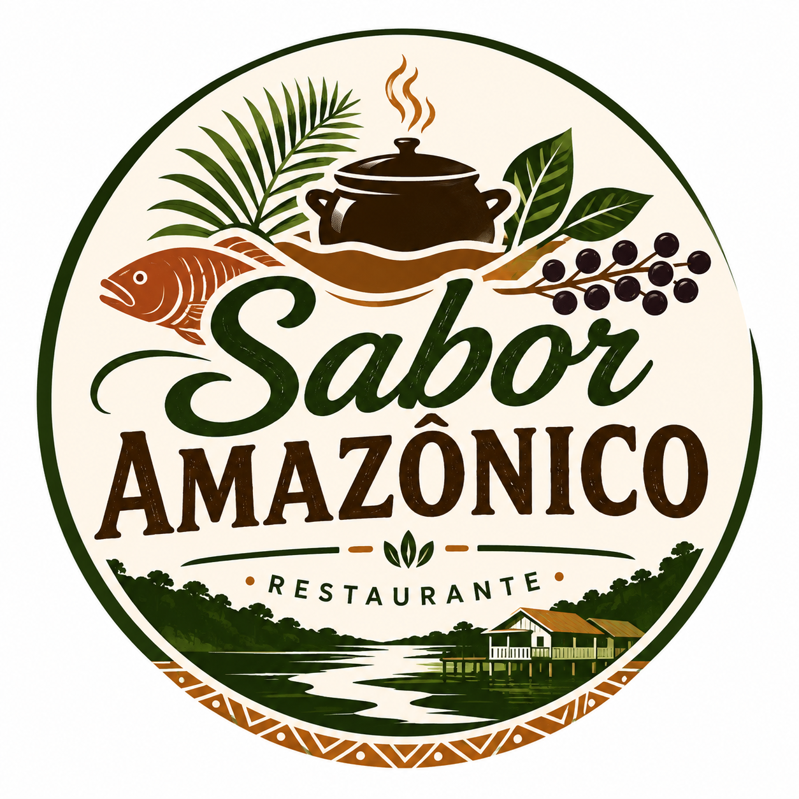

Tambaqui Assado
Tambaqui assado acompanhado de arroz, farofa e salada regional.
R$ 42,00
Sabores da Amazônia em cada prato
O Sabor Amazônico é um restaurante fictício dedicado à valorização dos sabores e ingredientes da região amazônica. Nossa proposta é oferecer pratos saborosos em um ambiente agradável e acolhedor.

Tambaqui assado acompanhado de arroz, farofa e salada regional.
R$ 42,00
Filé de pirarucu preparado com temperos especiais e acompanhado de arroz.
R$ 45,00
Caldeirada preparada com peixe fresco, legumes e temperos regionais.
R$ 39,00
Filé de tucunaré grelhado acompanhado de arroz, legumes e farofa.
R$ 44,00
Arroz preparado com ingredientes típicos e temperos da região.
R$ 32,00
Açaí servido gelado com acompanhamentos tradicionais.
R$ 18,00
Endereço: Avenida das Palmeiras, 100 - Manaus, AM
Telefone: (92) 99999-9999
Horário: Segunda a sábado, das 11h às 22h